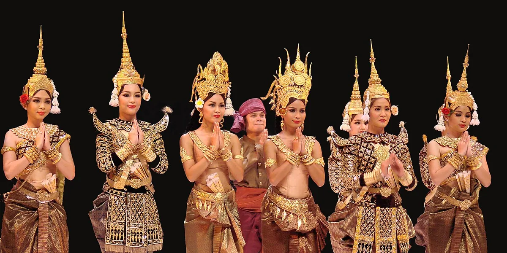

Cambodia News
Cambodia’s Chou Rilaorhours Wins Miss Teen Icon International 2026
Cambodia has a new international crown to celebrate. Chou Rilaorhours, who represented the Kingdom at Miss Teen Icon International 2026 in Indonesia, has been crowned the winner, Cambodian news sites reported on 13 and 14 November 2026. Along the way she brought Khmer classical dance to the talent stage and drew millions of votes in the online People’s Choice contest. This is what has been reported about her win, her road to the crown and the pageant itself.

A crown for Cambodia
Two Cambodian news sites reported the result: TNB News on 13 November 2026 and Kampuchea Thmey on 14 November. Both said that Chou Rilaorhours, Cambodia’s entrant, had won the crown of Miss Teen Icon International 2026 in Indonesia. The competition was held in Jakarta from 7 to 14 November, alongside a second pageant, Miss Icon International, according to The Star.
It was a strong week for Cambodia at both contests. At Miss Icon International 2026, Cambodia’s delegate placed third runner-up and finished in the top five, Kampuchea Thmey reported. The site said Cambodians on social media praised and congratulated both of them.
Who is Chou Rilaorhours?
Chou Rilaorhours (her name is also written Chouri Laorhours) won Miss Teen Cambodia 2025 and began working in entertainment at the age of seven, The Star reported, citing Apsara Media Services. In July 2026, the Cambodian entertainment site AMS Infotainment described her as an actress, dancer, fashion model and entrepreneur with about ten years of experience in the arts, a path she started with her family’s support.
AMS listed the titles she had already won before this year’s international contest:
- 2023: Miss Pre Teen Cambodia
- 2024: Miss Pre Teen Junior Idol World
- 2025: Miss Teen Cambodia
- 2026: Miss Teen Icon Cambodia, chosen to represent the country at Miss Teen Icon International
She also speaks about causes beyond the stage. According to AMS, she speaks out against child abuse, trafficking and exploitation. She hopes to build a successful business and use its income to support organisations that protect and empower abused and vulnerable children, and she wants young people to embrace Khmer heritage.
Khmer classical dance on the talent stage
For the talent round on 11 November, she performed a solo Khmer classical dance, The Star reported. In a video of the performance at Balai Sarbini Hall that she shared on social media, she wore a tall gold headdress and a blue-and-gold costume, moved between kneeling and standing poses, and used the controlled arm and wrist gestures the dance is known for.
Khmer classical dance is the art UNESCO lists as the Royal Ballet of Cambodia. UNESCO describes it as known for its graceful hand gestures and elaborate costumes, and says that for more than a thousand years it has been tied to the Khmer court and performed at royal ceremonies such as coronations, weddings and funerals. UNESCO first proclaimed it in 2003 and inscribed it on the Representative List of the Intangible Cultural Heritage of Humanity in 2008.
She also presented a national costume under a Khmer title that The Star translated as “Female Farmers of the Golden Land, Apsaras of the Great Kingdom”, and she captioned her post “Cambodia: Kingdom of wonder”.
Millions of votes from fans
Fans could also support the contestants online. The official voting portal listed teen contestants from 14 countries: Cambodia, host country Indonesia, Thailand, India, the UK, Lithuania, the Netherlands, Spain, Botswana, Nigeria, South Africa, Colombia, Cuba and the US, The Star reported.
Under the published rules, the top vote-getter in each of the two pageants advanced to the top five, and the contestant with the highest total across both earned a direct place in the top three. Chou Rilaorhours led an earlier People’s Choice update across the two pageants, The Star reported. Another update of the standings, in a screenshot seen by MyBirthSign, showed her in second place with more than 7.9 million votes.
About Miss Teen Icon International
Miss Teen Icon International is a young contest. Its first edition was held in Phnom Penh in March 2024, and Cambodia also hosted the next edition before Indonesia took over as host this year, The Star reported.
At the 2025 final in Phnom Penh on 25 May 2025, Sasha Starr of the United Kingdom was crowned, with the Philippines’ Yashna Sharma as first runner-up and a Cambodian delegate among the other runners-up, PhilSTAR Life reported. In 2026 the teen contest ran alongside Miss Icon International, and the People’s Choice rules counted votes across both pageants.
A proud moment for Cambodia
For many Cambodians, the win means more than a crown. Chou Rilaorhours took one of the country’s best-known performing arts, a dance tied to the Khmer court for more than a thousand years, to an international stage, and fans answered with millions of online votes and messages of congratulations.
Pageant results and vote counts come from the organisers and from news reports. The figures on this page are the ones reported at the time of writing, 15 November 2026.
Frequently asked questions
Who won Miss Teen Icon International 2026?
Cambodia’s Chou Rilaorhours, who was Miss Teen Cambodia 2025. The Cambodian news sites TNB News and Kampuchea Thmey reported her win on 13 and 14 November 2026.
Where was Miss Teen Icon International 2026 held?
In Jakarta, Indonesia, from 7 to 14 November 2026, alongside Miss Icon International. The first two editions were held in Cambodia.
What did Chou Rilaorhours perform in the talent round?
A solo Khmer classical dance, the art UNESCO lists as the Royal Ballet of Cambodia. She wore a tall gold headdress and a blue-and-gold costume.
How did the People’s Choice vote work?
Under the published rules, the top vote-getter in each of the two pageants advanced to the top five, and the contestant with the highest total across both earned a direct place in the top three.
Sources and further reading
- The Star: “Cambodian teen brings Khmer classical dance to Jakarta pageant” (12 November 2026, from The Phnom Penh Post/ANN) — the talent round, the dance and Balai Sarbini Hall, the dates in Jakarta, the 14 countries, the People’s Choice rules, Miss Teen Cambodia 2025, her start at age seven, the national costume and the pageant’s history.
- Kampuchea Thmey: report on the Miss Teen Icon International 2026 crown (14 November 2026, in Khmer) — the crown, the Miss Icon International result (third runner-up, top five) and the praise on social media.
- TNB News: report on the Miss Teen Icon International 2026 win (13 November 2026, in Khmer) — the win in Indonesia.
- AMS Infotainment: profile before the pageant (15 July 2026, in Khmer) — her earlier titles, her work in the arts and the causes she supports.
- PhilSTAR Life: “PH bet wins first runner-up at Miss Teen Icon International” (28 May 2025) — the 2025 final in Phnom Penh and its results.
- UNESCO Intangible Cultural Heritage: “Royal ballet of Cambodia” — the description of Khmer classical dance and the 2003 and 2008 dates.
This is a news summary of what other outlets have reported; MyBirthSign has no connection to Miss Teen Icon International or its organisers. Every fact above comes from the sources listed. Photos of the contestants belong to their photographers and the pageant, so none are used here; the photo of Khmer classical dance is from Wikimedia Commons under the free licence named under it.
Explore more: Cambodia Water Festival · Bon Om Touk boat teams · Cambodia Independence Day · Find your Chinese zodiac sign
← Back to the MyBirthSign Blogព័ត៌មានកម្ពុជា
កញ្ញា ជូរី ល្អហួស របស់កម្ពុជា ឈ្នះមកុដ Miss Teen Icon International 2026
កម្ពុជាមានមកុដអន្តរជាតិថ្មីមួយទៀត ដែលគួរឲ្យអបអរសាទរ។ កញ្ញា ជូរី ល្អហួស ដែលតំណាងឲ្យព្រះរាជាណាចក្រកម្ពុជា នៅកម្មវិធី Miss Teen Icon International 2026 នៅប្រទេសឥណ្ឌូណេស៊ី ត្រូវបានប្រកាសជាអ្នកឈ្នះមកុដ នេះបើតាមវេបសាយព័ត៌មានកម្ពុជា ដែលបានចុះផ្សាយនៅថ្ងៃទី 13/11/2026 និង 14/11/2026។ ក្នុងដំណើរប្រកួត កញ្ញាបាននាំយករបាំបុរាណខ្មែរ ទៅបង្ហាញនៅលើឆាកប្រកួតទេពកោសល្យ ហើយទទួលបានការបោះឆ្នោតរាប់លាន ក្នុងការប្រកួត People’s Choice តាមអនឡាញ។ ខាងក្រោមនេះ ជាអ្វីដែលត្រូវបានរាយការណ៍ អំពីជ័យជម្នះរបស់កញ្ញា ដំណើររបស់កញ្ញាឆ្ពោះទៅរកមកុដ និងអំពីកម្មវិធីប្រកួតនេះ។
មកុដមួយសម្រាប់កម្ពុជា
វេបសាយព័ត៌មានកម្ពុជាពីរ បានរាយការណ៍លទ្ធផលនេះ៖ TNB News នៅថ្ងៃទី 13/11/2026 និងកាសែតកម្ពុជាថ្មី នៅថ្ងៃទី 14/11/2026។ ទាំងពីរបានឲ្យដឹងថា កញ្ញា ជូរី ល្អហួស បេក្ខនារីតំណាងកម្ពុជា បានឈ្នះមកុដ Miss Teen Icon International 2026 នៅប្រទេសឥណ្ឌូណេស៊ី។ យោងតាម The Star ការប្រកួតនេះធ្វើឡើងនៅទីក្រុងហ្សាការតា ពីថ្ងៃទី 07/11/2026 ដល់ថ្ងៃទី 14/11/2026 ស្របពេលជាមួយកម្មវិធីប្រកួតមួយទៀតគឺ Miss Icon International។
នេះជាសប្ដាហ៍ដ៏ល្អសម្រាប់កម្ពុជា នៅក្នុងការប្រកួតទាំងពីរ។ កាសែតកម្ពុជាថ្មីបានរាយការណ៍ថា នៅ Miss Icon International 2026 បេក្ខនារីតំណាងកម្ពុជា បានជាប់លំដាប់រងទី 3 និងស្ថិតក្នុងកំពូល 5។ កាសែតនេះបានឲ្យដឹងថា ប្រជាជនកម្ពុជានៅលើបណ្ដាញសង្គម បានសរសើរ និងអបអរសាទរដល់បេក្ខនារីទាំងពីររូប។
តើកញ្ញា ជូរី ល្អហួស ជានរណា?
កញ្ញា ជូរី ល្អហួស (ឈ្មោះជាអក្សរឡាតាំង Chou Rilaorhours ឬ Chouri Laorhours) បានឈ្នះ Miss Teen Cambodia 2025 ហើយបានចាប់ផ្ដើមធ្វើការក្នុងវិស័យសិល្បៈកម្សាន្ត តាំងពីអាយុ 7 ឆ្នាំ នេះបើតាម The Star ដែលដកស្រង់ពី Apsara Media Services។ នៅខែកក្កដា 2026 វេបសាយកម្សាន្តកម្ពុជា AMS Infotainment បានពិពណ៌នាកញ្ញាថា ជាតារាសម្ដែង អ្នករបាំ តារាម៉ូដែល និងជាសហគ្រិន ដែលមានបទពិសោធក្នុងវិស័យសិល្បៈប្រហែល 10 ឆ្នាំ ជាដំណើរដែលកញ្ញាបានចាប់ផ្ដើម ដោយមានការគាំទ្រពីក្រុមគ្រួសារ។
AMS បានរាយនាមតំណែងដែលកញ្ញាធ្លាប់ឈ្នះ មុនការប្រកួតអន្តរជាតិឆ្នាំនេះ៖
- 2023៖ Miss Pre Teen Cambodia
- 2024៖ Miss Pre Teen Junior Idol World
- 2025៖ Miss Teen Cambodia
- 2026៖ Miss Teen Icon Cambodia ដែលត្រូវបានជ្រើសរើសឲ្យតំណាងប្រទេស នៅ Miss Teen Icon International
កញ្ញាក៏និយាយអំពីបុព្វហេតុនានា ក្រៅពីលើឆាកផងដែរ។ យោងតាម AMS កញ្ញាលើកសំឡេងប្រឆាំងនឹងការរំលោភបំពានលើកុមារ ការជួញដូរមនុស្ស និងការកេងប្រវ័ញ្ច។ កញ្ញាប្រាថ្នាចង់កសាងអាជីវកម្មមួយឲ្យទទួលបានជោគជ័យ ហើយប្រើប្រាក់ចំណូលពីអាជីវកម្មនោះ ដើម្បីគាំទ្រអង្គការនានា ដែលការពារ និងពង្រឹងសមត្ថភាពកុមារដែលរងការរំលោភបំពាន និងកុមារងាយរងគ្រោះ ហើយកញ្ញាចង់ឲ្យយុវជនស្រឡាញ់ និងថែរក្សាបេតិកភណ្ឌខ្មែរ។
របាំបុរាណខ្មែរ នៅលើឆាកទេពកោសល្យ
The Star បានរាយការណ៍ថា ក្នុងវគ្គទេពកោសល្យ នៅថ្ងៃទី 11/11/2026 កញ្ញាបានសម្ដែងរបាំបុរាណខ្មែរតែម្នាក់ឯង។ នៅក្នុងវីដេអូនៃការសម្ដែងនៅសាល Balai Sarbini Hall ដែលកញ្ញាបានចែករំលែកនៅលើបណ្ដាញសង្គម កញ្ញាពាក់មកុដមាសខ្ពស់ និងសម្លៀកបំពាក់ពណ៌ខៀវលាយមាស ផ្លាស់ប្ដូររវាងក្បាច់លុតជង្គង់ និងក្បាច់ឈរ ហើយប្រើក្បាច់ដៃ និងកដៃយ៉ាងទន់ភ្លន់ និងមានវិន័យ ដែលជាលក្ខណៈពិសេសរបស់របាំនេះ។
របាំបុរាណខ្មែរ គឺជាសិល្បៈដែលយូណេស្កូ (UNESCO) ចុះក្នុងបញ្ជីក្រោមឈ្មោះ របាំព្រះរាជទ្រព្យកម្ពុជា។ យូណេស្កូពិពណ៌នាថា របាំនេះល្បីដោយសារក្បាច់ដៃដ៏ទន់ភ្លន់ និងសម្លៀកបំពាក់ដ៏ល្អវិចិត្រ ហើយថា អស់រយៈពេលជាងមួយពាន់ឆ្នាំមកហើយ របាំនេះមានទំនាក់ទំនងជាមួយព្រះរាជវាំងខ្មែរ និងត្រូវបានសម្ដែងក្នុងព្រះរាជពិធីនានា ដូចជាព្រះរាជពិធីគ្រងរាជ្យ អាពាហ៍ពិពាហ៍ និងពិធីបុណ្យសព។ យូណេស្កូបានប្រកាសទទួលស្គាល់របាំនេះជាលើកដំបូងនៅឆ្នាំ 2003 ហើយបានចុះក្នុងបញ្ជីតំណាងបេតិកភណ្ឌវប្បធម៌អរូបីនៃមនុស្សជាតិ នៅឆ្នាំ 2008។
កញ្ញាក៏បានបង្ហាញសម្លៀកបំពាក់ប្រពៃណីជាតិ ក្រោមចំណងជើងជាភាសាខ្មែរ ដែល The Star បកប្រែជាភាសាអង់គ្លេសថា “Female Farmers of the Golden Land, Apsaras of the Great Kingdom” ហើយកញ្ញាបានសរសេរភ្ជាប់នឹងការបង្ហោះរបស់កញ្ញាថា “Cambodia: Kingdom of wonder”។
ការបោះឆ្នោតរាប់លានពីអ្នកគាំទ្រ
អ្នកគាំទ្រក៏អាចគាំទ្របេក្ខនារីតាមអនឡាញបានដែរ។ The Star បានរាយការណ៍ថា គេហទំព័របោះឆ្នោតផ្លូវការ បានរាយនាមបេក្ខនារីវ័យជំទង់ មកពី 14 ប្រទេស៖ កម្ពុជា ឥណ្ឌូណេស៊ីដែលជាម្ចាស់ផ្ទះ ថៃ ឥណ្ឌា ចក្រភពអង់គ្លេស លីទុយអានី ហូឡង់ អេស្ប៉ាញ បុតស្វាណា នីហ្សេរីយ៉ា អាហ្វ្រិកខាងត្បូង កូឡុំប៊ី គុយបា និងសហរដ្ឋអាមេរិក។
តាមវិធានដែលបានផ្សព្វផ្សាយ បេក្ខនារីដែលទទួលបានសំឡេងឆ្នោតច្រើនជាងគេ ក្នុងការប្រកួតនីមួយៗក្នុងចំណោមការប្រកួតទាំងពីរ បានឡើងទៅកំពូល 5 ហើយបេក្ខនារីដែលទទួលបានសំឡេងឆ្នោតសរុបច្រើនជាងគេ ពីការប្រកួតទាំងពីររួមគ្នា ទទួលបានកន្លែងដោយផ្ទាល់ ក្នុងកំពូល 3។ The Star បានរាយការណ៍ថា កញ្ញា ជូរី ល្អហួស បាននាំមុខគេ ក្នុងលទ្ធផល People’s Choice មួយមុននោះ ដែលរួមការប្រកួតទាំងពីរ។ លទ្ធផលមួយទៀត ក្នុងរូបថតអេក្រង់ដែល MyBirthSign បានឃើញ បង្ហាញថាកញ្ញាស្ថិតនៅលេខ 2 ដោយទទួលបានសំឡេងឆ្នោតជាង 7.9 លាន។
អំពីកម្មវិធី Miss Teen Icon International
Miss Teen Icon International ជាកម្មវិធីប្រកួតដែលទើបតែចាប់ផ្ដើមថ្មីៗ។ The Star បានរាយការណ៍ថា ការប្រកួតលើកដំបូង ត្រូវបានរៀបចំនៅរាជធានីភ្នំពេញ ក្នុងខែមីនា 2024 ហើយកម្ពុជាក៏បានធ្វើជាម្ចាស់ផ្ទះនៃការប្រកួតលើកបន្ទាប់ផងដែរ មុនពេលឥណ្ឌូណេស៊ីទទួលធ្វើជាម្ចាស់ផ្ទះនៅឆ្នាំនេះ។
PhilSTAR Life បានរាយការណ៍ថា នៅវគ្គផ្ដាច់ព្រ័ត្រឆ្នាំ 2025 នៅរាជធានីភ្នំពេញ នៅថ្ងៃទី 25/05/2025 Sasha Starr មកពីចក្រភពអង់គ្លេស ត្រូវបានពាក់មកុដ ដោយមាន Yashna Sharma មកពីហ្វីលីពីន ជាប់លំដាប់រងទី 1 និងមានបេក្ខនារីកម្ពុជាម្នាក់ ក្នុងចំណោមអ្នកជាប់លំដាប់រងផ្សេងទៀត។ នៅឆ្នាំ 2026 ការប្រកួតសម្រាប់វ័យជំទង់នេះ ធ្វើឡើងស្របពេលជាមួយ Miss Icon International ហើយវិធានបោះឆ្នោត People’s Choice រាប់សំឡេងឆ្នោតពីការប្រកួតទាំងពីររួមគ្នា។
ពេលវេលាដ៏មានមោទនភាពសម្រាប់កម្ពុជា
សម្រាប់ប្រជាជនកម្ពុជាជាច្រើន ជ័យជម្នះនេះមានន័យច្រើនជាងមកុដមួយ។ កញ្ញា ជូរី ល្អហួស បាននាំយកសិល្បៈសម្ដែងដ៏ល្បីល្បាញបំផុតមួយរបស់ប្រទេស ដែលជារបាំមានទំនាក់ទំនងជាមួយព្រះរាជវាំងខ្មែរ អស់រយៈពេលជាងមួយពាន់ឆ្នាំ ទៅបង្ហាញនៅលើឆាកអន្តរជាតិ ហើយអ្នកគាំទ្របានឆ្លើយតបវិញ ដោយការបោះឆ្នោតតាមអនឡាញរាប់លាន និងសារអបអរសាទរ។
លទ្ធផលនៃការប្រកួត និងចំនួនសំឡេងឆ្នោត មកពីអ្នករៀបចំកម្មវិធី និងរបាយការណ៍ព័ត៌មាន។ តួលេខនៅលើទំព័រនេះ គឺជាតួលេខដែលត្រូវបានរាយការណ៍ នៅពេលសរសេរអត្ថបទនេះ គឺថ្ងៃទី 15/11/2026។
សំណួរដែលគេសួរញឹកញាប់
តើនរណាឈ្នះ Miss Teen Icon International 2026?
កញ្ញា ជូរី ល្អហួស របស់កម្ពុជា ដែលធ្លាប់ជា Miss Teen Cambodia 2025។ វេបសាយព័ត៌មានកម្ពុជា TNB News និងកាសែតកម្ពុជាថ្មី បានរាយការណ៍អំពីជ័យជម្នះរបស់កញ្ញា នៅថ្ងៃទី 13/11/2026 និង 14/11/2026។
តើ Miss Teen Icon International 2026 ធ្វើឡើងនៅឯណា?
នៅទីក្រុងហ្សាការតា ប្រទេសឥណ្ឌូណេស៊ី ពីថ្ងៃទី 07/11/2026 ដល់ថ្ងៃទី 14/11/2026 ស្របពេលជាមួយ Miss Icon International។ ការប្រកួតពីរលើកដំបូង ត្រូវបានរៀបចំនៅកម្ពុជា។
តើកញ្ញា ជូរី ល្អហួស បានសម្ដែងអ្វី ក្នុងវគ្គទេពកោសល្យ?
របាំបុរាណខ្មែរតែម្នាក់ឯង ដែលជាសិល្បៈដែលយូណេស្កូចុះក្នុងបញ្ជីក្រោមឈ្មោះ របាំព្រះរាជទ្រព្យកម្ពុជា។ កញ្ញាពាក់មកុដមាសខ្ពស់ និងសម្លៀកបំពាក់ពណ៌ខៀវលាយមាស។
តើការបោះឆ្នោត People’s Choice ដំណើរការយ៉ាងដូចម្ដេច?
តាមវិធានដែលបានផ្សព្វផ្សាយ បេក្ខនារីដែលទទួលបានសំឡេងឆ្នោតច្រើនជាងគេ ក្នុងការប្រកួតនីមួយៗក្នុងចំណោមការប្រកួតទាំងពីរ បានឡើងទៅកំពូល 5 ហើយបេក្ខនារីដែលទទួលបានសំឡេងឆ្នោតសរុបច្រើនជាងគេ ពីការប្រកួតទាំងពីររួមគ្នា ទទួលបានកន្លែងដោយផ្ទាល់ ក្នុងកំពូល 3។
ប្រភព និងឯកសារអានបន្ថែម
- The Star: “Cambodian teen brings Khmer classical dance to Jakarta pageant” (12 November 2026, from The Phnom Penh Post/ANN) — វគ្គទេពកោសល្យ របាំ និងសាល Balai Sarbini Hall កាលបរិច្ឆេទនៅទីក្រុងហ្សាការតា ប្រទេសទាំង 14 វិធាន People’s Choice តំណែង Miss Teen Cambodia 2025 ការចាប់ផ្ដើមអាជីពតាំងពីអាយុ 7 ឆ្នាំ សម្លៀកបំពាក់ប្រពៃណីជាតិ និងប្រវត្តិកម្មវិធីប្រកួត។
- Kampuchea Thmey: report on the Miss Teen Icon International 2026 crown (14 November 2026, in Khmer) — មកុដ លទ្ធផលនៅ Miss Icon International (លំដាប់រងទី 3 កំពូល 5) និងការសរសើរនៅលើបណ្ដាញសង្គម។
- TNB News: report on the Miss Teen Icon International 2026 win (13 November 2026, in Khmer) — ជ័យជម្នះនៅប្រទេសឥណ្ឌូណេស៊ី។
- AMS Infotainment: profile before the pageant (15 July 2026, in Khmer) — តំណែងដែលកញ្ញាធ្លាប់ឈ្នះ ការងាររបស់កញ្ញាក្នុងវិស័យសិល្បៈ និងបុព្វហេតុដែលកញ្ញាគាំទ្រ។
- PhilSTAR Life: “PH bet wins first runner-up at Miss Teen Icon International” (28 May 2025) — វគ្គផ្ដាច់ព្រ័ត្រឆ្នាំ 2025 នៅរាជធានីភ្នំពេញ និងលទ្ធផល។
- UNESCO Intangible Cultural Heritage: “Royal ballet of Cambodia” — ការពិពណ៌នាអំពីរបាំបុរាណខ្មែរ និងឆ្នាំ 2003 និង 2008។
នេះជាសេចក្ដីសង្ខេបព័ត៌មាន អំពីអ្វីដែលប្រព័ន្ធផ្សព្វផ្សាយផ្សេងទៀតបានរាយការណ៍។ MyBirthSign គ្មានទំនាក់ទំនងអ្វីជាមួយ Miss Teen Icon International ឬអ្នករៀបចំកម្មវិធីនេះទេ។ រាល់ព័ត៌មានខាងលើ មកពីប្រភពដែលបានរាយនាម។ រូបថតរបស់បេក្ខនារី ជាកម្មសិទ្ធិរបស់អ្នកថតរូប និងកម្មវិធីប្រកួត ដូច្នេះយើងមិនប្រើរូបថតទាំងនោះនៅទីនេះទេ។ រូបថតរបាំបុរាណខ្មែរ មកពី Wikimedia Commons ក្រោមអាជ្ញាប័ណ្ណសេរី ដែលបានបញ្ជាក់នៅក្រោមរូប។
អានបន្ថែម៖ ព្រះរាជពិធីបុណ្យអុំទូក · ក្រុមទូកប្រណាំងបុណ្យអុំទូក · ពិធីបុណ្យឯករាជ្យជាតិ · ស្វែងរករាសីចិនរបស់អ្នក
← ត្រឡប់ទៅប្លុក MyBirthSign